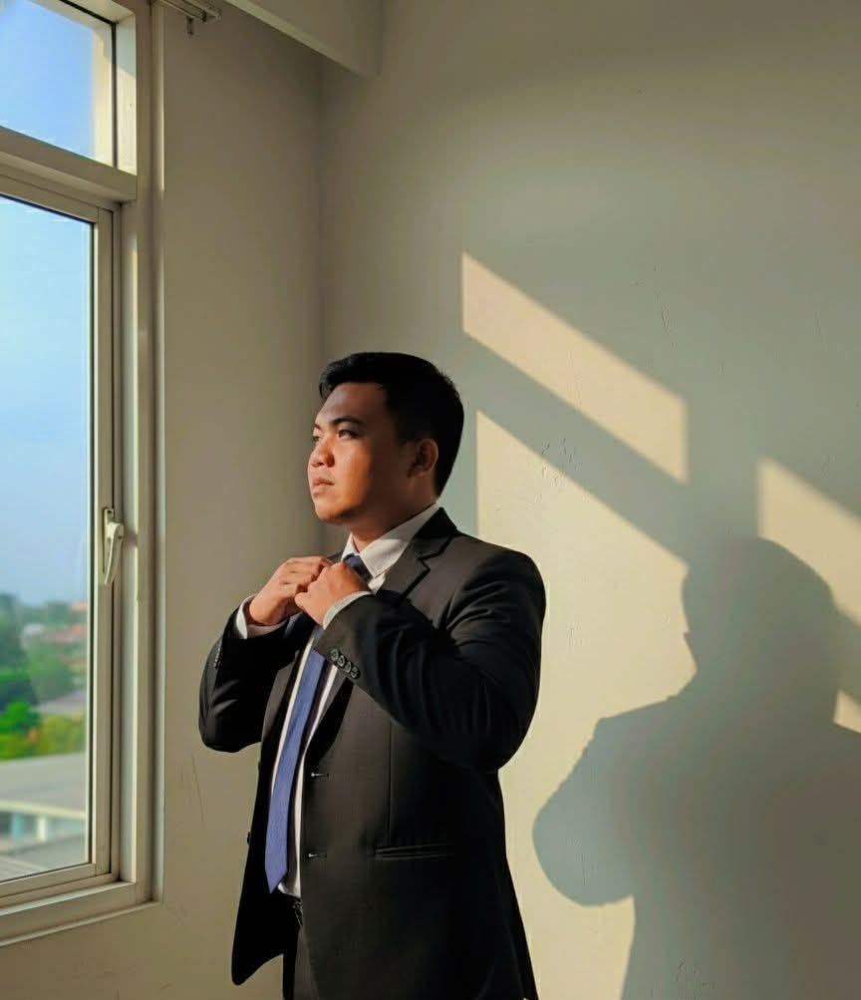
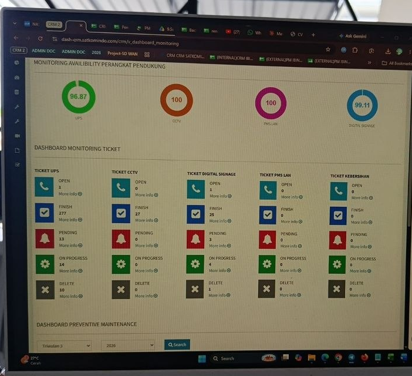
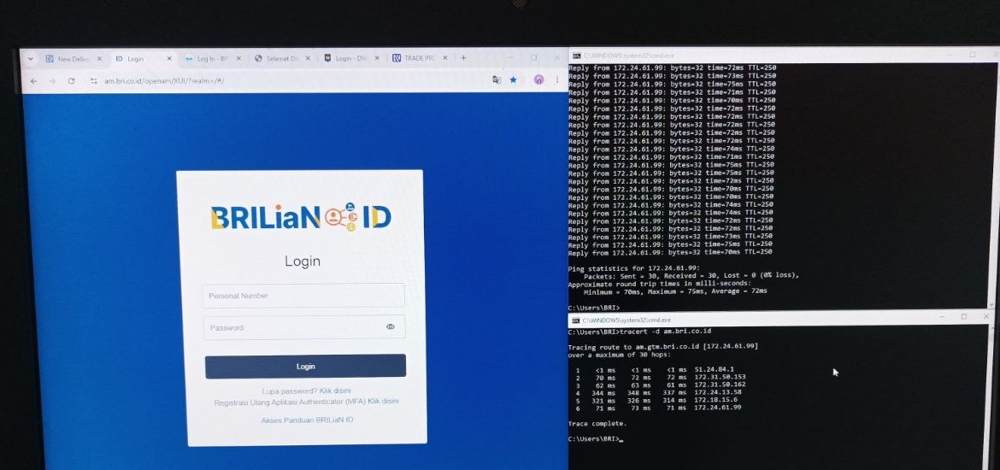

Optimasi performa jaringan, mitigasi gangguan, dan menjaga infrastruktur tetap online.
Santana Kiana Winarta - lulusan Teknik Telekomunikasi bersertifikat Cisco CCNA CyberOps, dengan pengalaman langsung memantau infrastruktur SD-WAN, CCTV, dan jaringan cabang agar tetap sesuai target SLA.

Tentang Saya
Saya adalah NOC Engineer yang teliti dengan latar belakang Teknik Telekomunikasi (IPK 3.79/4.00) dan sertifikasi Cisco CCNA CyberOps. Selama ini saya terbiasa menjaga ketersediaan jaringan pada level tinggi, menangani lebih dari 50 insiden SD-WAN dan infrastruktur cabang setiap bulan sesuai target SLA menggunakan tools diagnostik command-line seperti Ping, Tracert, dan PuTTY.
Saya juga terbiasa melakukan eskalasi L1/L2, memahami routing TCP/IP, serta mengoordinasikan dispatch teknisi lapangan untuk jaringan SD-WAN, CCTV, dan NVR. Bagi saya, pekerjaan NOC bukan hanya soal memantau layar dashboard - tapi memastikan setiap laporan gangguan direspons cepat, akurat, dan terdokumentasi dengan baik.
- LOKASIBali, Indonesia
- TELEPON+62 813-1380-691
- EMAILsantanakiana0402@gmail.com
- LINKEDINsantanakiana-winarta04
- SERTIFIKASICisco CCNA CyberOps
- BAHASAIndonesia (Native), Inggris (Professional)
Kompetensi & Keahlian Teknis
NOC Operations
- Incident handling & escalation
- Ticketing / work order management
- SLA tracking & event logging
- Operational reporting
- Field engineer dispatch
Networking & Security
- SD-WAN architecture
- Multi-WAN failover
- TCP/IP & IPv4 subnetting
- Gateway, DNS, ARP, RIP
- Router configuration (PuTTY)
Infrastruktur & Hardware
- Router & switch
- SD-WAN edge devices
- NVR / CCTV systems
- UPS backup infrastructure
- Fiber optic (FTTH), NTP sync
Tools & Utilities
- Ping, Tracert, PuTTY
- Python
- AutoCAD
- Microsoft Excel / Google Sheets
- Windows environment
Pengalaman Profesional
Help Desk Specialist (NOC L1 / Network Support)
- Memantau 100% status harian SD-WAN edge device & multi-WAN link failover di seluruh cabang menggunakan Ping, Tracert, dan PuTTY untuk mengisolasi masalah routing L1.
- Menyelesaikan 50+ insiden jaringan & CCTV/NVR setiap bulan dalam target SLA, mengelola ticketing work order end-to-end dan dispatch teknisi lapangan.
- Melakukan remote provisioning L1, validasi parameter jaringan (IP, gateway, subnetting), dan sinkronisasi NTP server.
- Menjalankan preventive & corrective maintenance untuk switch, UPS backup, dan recording server.
Sales Engineer Intern
- Mendesain 10+ layout kabel fiber optic (FTTH) dan topologi jaringan CCTV menggunakan AutoCAD.
- Menyusun estimasi anggaran (RAB) dan skema teknis untuk infrastruktur jaringan dan sistem komunikasi bertenaga surya.
- Menulis 10+ dokumentasi teknis dan Bill of Materials (BOM/RAB) untuk mengurangi kesalahan konfigurasi lapangan.
Help Desk Specialist Intern
- Melakukan provisioning & aktivasi 100+ Serial Number router via PuTTY, memastikan 100% keberhasilan deployment awal untuk 100+ koneksi FTTH pelanggan dalam 90 hari.
- Mengelola ticketing work order teknisi lapangan dan menjaga akurasi log data 100% di Microsoft Excel untuk pelaporan SLA internal.
Cuplikan Pekerjaan Lapangan

Dashboard Monitoring Ketersediaan Perangkat
Dashboard internal yang saya gunakan untuk memantau ketersediaan perangkat pendukung cabang - UPS, CCTV, PMS LAN, dan digital signage - sekaligus melacak status tiket per kategori: open, on progress, pending, hingga selesai. Data ini menjadi dasar pelaporan SLA dan preventive maintenance mingguan.

Verifikasi Konektivitas SD-WAN Cabang
Proses pengecekan L1 saat menangani gangguan koneksi cabang: menjalankan ping untuk memastikan latency dan packet loss dalam batas wajar, lalu tracert untuk menelusuri setiap hop hingga ke server otentikasi, sebelum memvalidasi login ke portal internal. Langkah ini bagian dari SOP eskalasi sebelum dispatch teknisi lapangan.
Pendidikan & Sertifikasi
S1 Teknik Telekomunikasi
Telkom University · Bandung, Indonesia
IPK 3.79 / 4.00 - Mata kuliah relevan: Computer Networks, Data Communications, Optical Communication Systems.
Exchange Program: Universiti Utara Malaysia (UUM). Treasurer HMTT - mengelola anggaran acara Rp50 juta+ di 5 program departemen tanpa selisih keuangan.
Diploma Teknik Jaringan Komputer & Telekomunikasi
SMK Telkom Bandung · Bandung, Indonesia
Nilai 82.06 / 100 - Asisten Lab untuk Optical Communication, memfasilitasi sesi praktik fiber optic dan hardware jaringan.